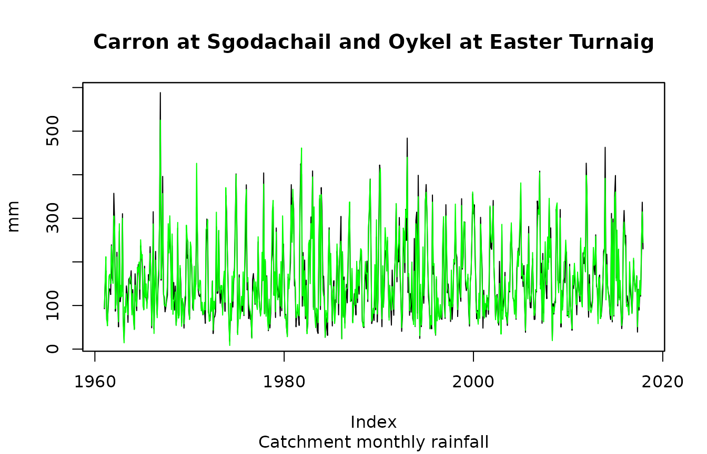
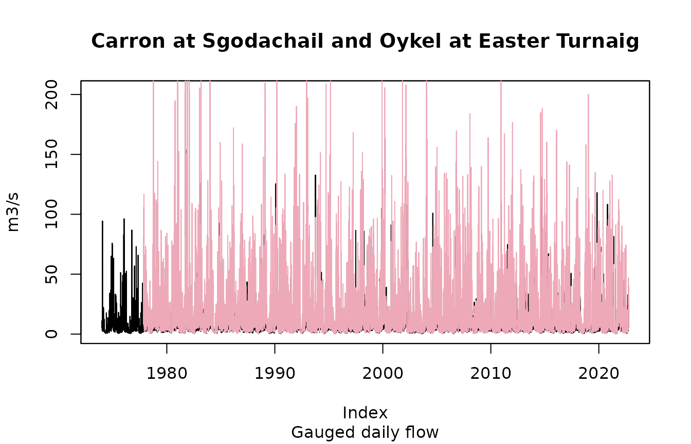
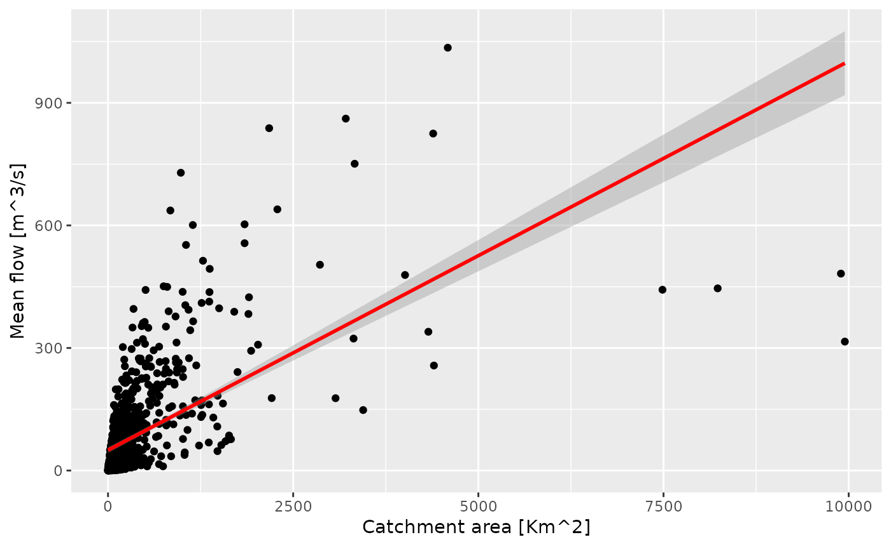

vignettes/rnrfa-vignette.Rmd
rnrfa-vignette.RmdThe UK National River Flow Archive serves daily streamflow data, spatial rainfall averages and information regarding elevation, geology, land cover and FEH related catchment descriptors.
There is currently an API under development that in future should provide access to the following services: metadata catalogue, catalogue filters based on a geographical bounding-box, catalogue filters based on metadata entries, gauged daily data for about 400 stations available in WaterML2 format, the OGC standard used to describe hydrological time series.
The information returned by the first three services is in JSON format, while the last one is an XML variant.
The rnrfa package aims to achieve a simpler and more
efficient access to data by providing wrapper functions to send HTTP
requests and interpret XML/JSON responses.
R package dependencies can be installed running the following code:
# these should normally already be installed with rnrfa
install.packages(c("curl", "ggmap", "ggplot2", "httr", "jsonlite",
"lubridate", "parallel", "sf", "tibble", "zoo"))This demo makes also use of external libraries. To install and load them run the following commands:
packs <- c("devtools", "DT", "leaflet", "dygraphs")
install.packages(packs, repos = "https://cloud.r-project.org")
lapply(packs, require, character.only = TRUE)The stable version of the rnrfa package is available from CRAN:
install.packages("rnrfa")Or you can install the development version from Github with remotes:
remotes::install_github("ilapros/rnrfa")Now, load the rnrfa package:
The function station_ids() returns a vector of all NRFA
station identifiers.
# Retrieve station identifiers:
allIDs <- station_ids()
head(allIDs)## [1] 1001 2001 2002 3001 3002 3003The function catalogue() retrieves information for
monitoring stations. The function, used with no inputs, requests the
full list of gauging stations with associated metadata. The output is a
tibble containing one record for each station and as many columns as the
number of metadata entries available.
# Retrieve information for all the stations in the catalogue:
allStations <- catalogue()
head(allStations)## # A tibble: 6 × 114
## id name `catchment-area` `grid-reference`$ngr easting northing
## <int> <chr> <dbl> <chr> <dbl> <dbl>
## 1 1001 Wick at Tarroul 162. ND2620254915 326202 954915
## 2 2001 Helmsdale at Kil… 551. NC9983918163 299839 918163
## 3 2002 Brora at Bruachr… 434. NC8915603916 289156 903916
## 4 3001 Shin at Lairg 495. NC581062 258100 906200
## 5 3002 Carron at Sgodac… 241. NH4913692152 249136 892152
## 6 3003 Oykel at Easter … 331. NC4030500145 240305 900145
## # ℹ 110 more variables: `grid-reference`$easting <dbl>, $northing <dbl>,
## # `lat-long` <df[,3]>, latitude <dbl>, longitude <dbl>, river <chr>,
## # location <chr>, `station-level` <dbl>, `measuring-authority-id` <chr>,
## # `measuring-authority-station-id` <chr>, `hydrometric-area` <int>,
## # opened <chr>, closed <chr>, `station-type` <chr>, `bankfull-flow` <dbl>,
## # `structurefull-flow` <dbl>, sensitivity <dbl>, `nrfa-mean-flow` <lgl>,
## # `nrfa-peak-flow` <lgl>, `feh-pooling` <lgl>, `feh-qmed` <lgl>, …The columns are briefly described below (see also API documentation):
id The station identifier.name The station name.catchment-area The catchment area (in km2).grid-reference The station grid reference. For JSON
output the grid-reference is represented as an object with the following
properties:
ngr (String) The grid reference in string form
(i.e. “SS9360201602”).easting (Number) The grid reference easting (in
metres).northing (Number) The grid reference northing (in
metres).lat-long The station latitude/longitude. For JSON
output the lat-long is represented as an object with the following
properties:
string (String) The textual representation of the
lat/long (i.e. “50°48’15.0265”N 3°30’40.7121”W”).latitude (Number) The latitude (expressed in decimal
degrees).longitude (Number) The longitude (expressed in decimal
degrees).river The name of the river.location The name of the location on the river.station-level The altitude of the station, in metres,
above Ordnance Datum or, in Northern Ireland, Malin Head.easting The grid reference easting.northing The grid reference northing.station-information Basic station information: id,
name, catchment-area, grid-reference, lat-long, river, location,
station-level, measuring-authority-id, measuring-authority-station-id,
hydrometric-area, opened, closed, station-type, bankfull-flow,
structurefull-flow, sensitivity. category.The same function catalogue() can be used to filter
stations based on a bounding box or any of the metadata entries.
# Define a bounding box:
bbox <- list(lon_min = -3.82, lon_max = -3.63, lat_min = 52.43, lat_max = 52.52)
# Filter stations based on bounding box
x <- catalogue(bbox)
dim(x); range(x$latitude); range(x$longitude)## [1] 9 114## [1] 52.43854 52.47522## [1] -3.73172 -3.68999
# Filter based on minimum recording years
x <- catalogue(min_rec = 100)
dim(x); range(lubridate::year(x$`gdf-end-date`) - lubridate::year(x$`gdf-start-date`))## [1] 6 114## [1] 100 143
# Filter stations measuring a certain river
x <- catalogue(column_name="river", column_value="Wye")
dim(x); unique(x$river)## [1] 11 114## [1] "Wye"
# Filter based on bounding box & metadata strings
x <- catalogue(bbox, column_name="river", column_value="Wye")
dim(x); unique(x$river)## [1] 2 114## [1] "Wye"
# Filter stations based on threshold
x <- catalogue(bbox, column_name="catchment-area", column_value=">1")
dim(x); range(x$`catchment-area`)## [1] 8 114## [1] 1.08 10.55
# Filter based on minimum recording years
x <- catalogue(bbox, column_name = "catchment-area",
column_value = ">1",
min_rec = 30)
dim(x)## [1] 7 114
# Filter stations based on identification number
x <- catalogue(column_name="id", column_value="== c(3001,3002,3003)")
x$id## [1] 3001 3002 3003
# Other combined filtering
someStations <- catalogue(bbox,
column_name = "id",
column_value = "==c(54022,54090,54091,54092,54097)",
min_rec = 35)The rnrfa package allows convenient conversion between
UK grid reference and more standard coordinate systems. The function
osg_parse(), for example, converts the string to easting
and northing in the BNG coordinate system (EPSG code: 27700), as in the
example below:
# Where is the first catchment located?
someStations$`grid-reference`$ngr[1]## [1] "SN853872"
# Convert OS Grid reference to BNG
osg_parse("SN853872")## $easting
## [1] 285300
##
## $northing
## [1] 287200The same function can also convert from BNG to latitude and longitude in the WSGS84 coordinate system (EPSG code: 4326) as in the example below.
# Convert BNG to WSGS84
osg_parse(grid_refs = "SN853872", coord_system = "WGS84")## $lon
## [1] -3.689987
##
## $lat
## [1] 52.47065osg_parse() also works with multiple references:
osg_parse(grid_refs = someStations$`grid-reference`$ngr)## $easting
## [1] 285300 284233 284296 284514 283083
##
## $northing
## [1] 287200 287655 287733 287266 286939The first column of the table someStations contains the
id number. This can be used to retrieve time series data and convert
waterml2 files to time series object (of class zoo).
The National River Flow Archive mainly serves two types of time series data: gauged daily flow and catchment mean rainfall.
These time series can be obtained using the functions
gdf() and cmr(), respectively. Both functions
accept three inputs:
id, the station identification numbers (single
string or character vector).
metadata, a logical variable (FALSE by default). If
metadata is TRUE means that the result for a single station is a list
with two elements: data (the time series) and meta (metadata).
cl, This is a cluster object, created by the
parallel package. This is set to NULL by default, which sends sequential
calls to the server.
Other time series data are made available via the API and can be
retrieved using get_ts() - for details on the time series
which can be retrieved see ?get_ts.
Here is how to retrieve mean rainfall (monthly) data for Shin at Lairg (id = 3001) catchment.
One can also ask to retrieve some metadata with useful information:
# Fetch time series data and metadata from the waterml2 service
info <- cmr(id = "3001", metadata = TRUE)
info$meta## timestamp interval station.id station.name station.easting
## 1 2024-06-19T17:16:06 R816/1950-01/P1M 3001 Shin at Lairg 258100
## station.northing station.latitude station.longitude data.type.id
## 1 906200 58.02222 -4.404049 cmr
## data.type.name data.type.parameter data.type.units
## 1 Catchment Monthly Rainfall Rainfall mm
## data.type.measurement.type data.type.period
## 1 Accumulation P1M
plot(info$data,
main = paste("Monthly rainfall data for the",
info$meta$station.name,"catchment"),
xlab = "", ylab=info$meta$data.type.units)Here is how to retrieve (daily) flow data for Shin at Lairg (id = 3001) catchment.
# Fetch only time series data
# info <- gdf(id = "3001")
# plot(info)
# Fetch time series data and metadata from the waterml2 service
info <- gdf(id = "3001", metadata = TRUE)
plot(info$data,
main = paste0("Daily flow data for the ", info$meta$station.name,
" catchment (",info$meta$data.type.units, ")"),
ylab = info$meta$data.type.name)By default, the functions gdf() and cmr()
functions can be used to fetch time series data from multiple site in a
sequential mode (using 1 core):
# Search data/metadata
s <- cmr(c(3002,3003), metadata = TRUE)
# s is a list of 2 objects (one object for each site)
plot(s[[1]]$data,
main = paste(s[[1]]$meta$station.name, "and", s[[2]]$meta$station.name),
sub = "Catchment monthly rainfall", ylab = s[[1]]$meta$data.type.units)
lines(s[[2]]$data, col = "green")
s <- get_ts(c(3002, 3003), type = "gdf", metadata = TRUE)
plot(s[[1]]$data,
main = paste(s[[1]]$meta$station.name, "and", s[[2]]$meta$station.name),
sub = "Gauged daily flow", ylab=s[[1]]$meta$data.type.units)
lines(s[[2]]$data, col="pink2")
Upgrade your data.frame to a data.table:
Create interactive maps using leaflet:
library(leaflet)
leaflet(data = someStations) %>% addTiles() %>%
addMarkers(~longitude, ~latitude, popup = ~as.character(paste(id,name)))Interactive plots using dygraphs:
library(dygraphs)
dygraph(info$data) %>% dyRangeSelector()Sequential vs Concurrent requests: a simple benchmark test
library(parallel)
# Use detectCores() to find out many cores are available on your machine
cl <- makeCluster(getOption("cl.cores", detectCores()))
# Filter all the stations within the above bounding box
someStations <- catalogue(bbox)
# Get flow data with a sequential approach
system.time(s1 <- gdf(someStations$id, cl = NULL))
# Get flow data with a concurrent approach (using `parLapply()`)
system.time(s2 <- gdf(id = someStations$id, cl = cl))
stopCluster(cl)The measured flows are expected to increase with the catchment area. Let’s show this simple regression on a plot:
# Linear model
library(ggplot2)
ggplot(allStations[!is.na(allStations$qmed),],
aes(x = as.numeric(`catchment-area`), y = qmed)) +
geom_point() +
stat_smooth(formula = y ~ x, method = "lm", col = "red") +
xlab(expression(paste("Catchment area [Km^2]", sep=""))) +
ylab(expression(paste("Mean flow [m^3/s]", sep="")))